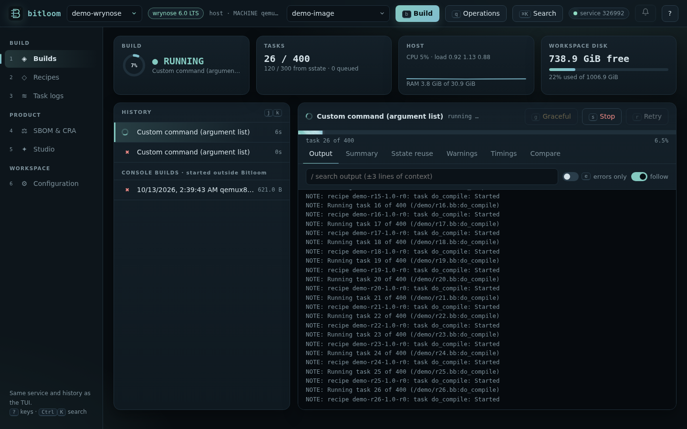
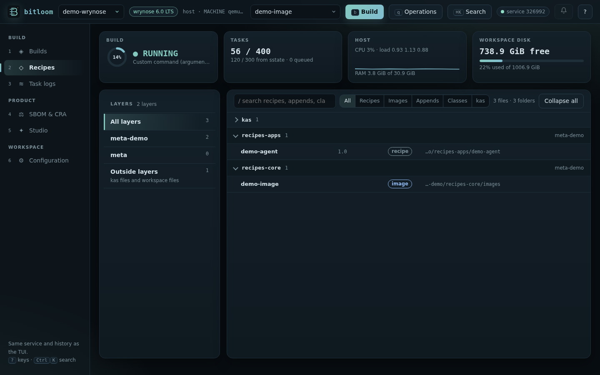
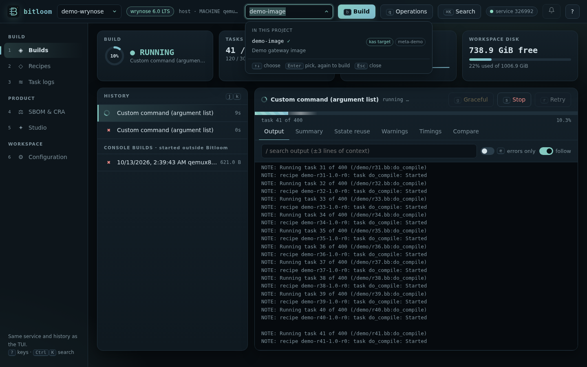
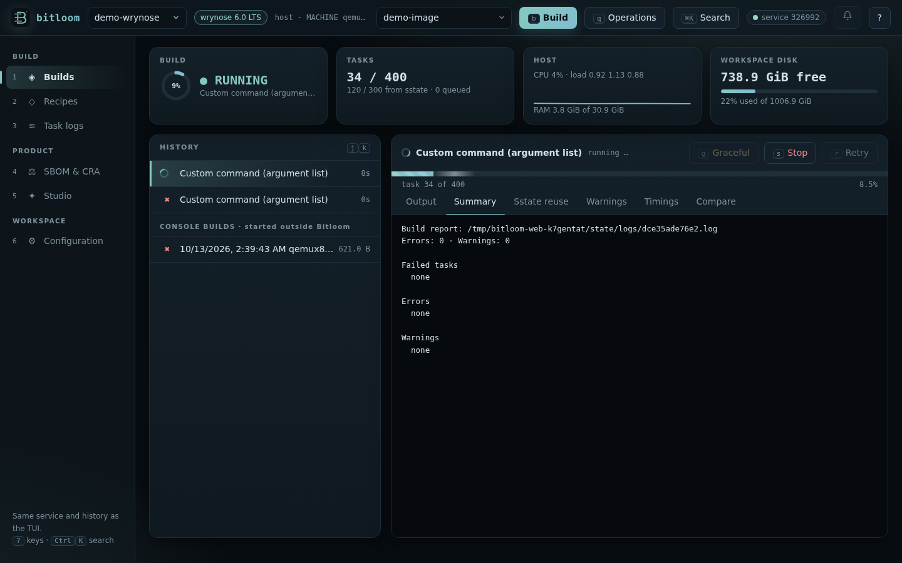
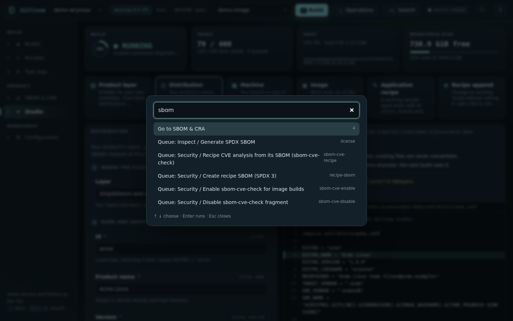
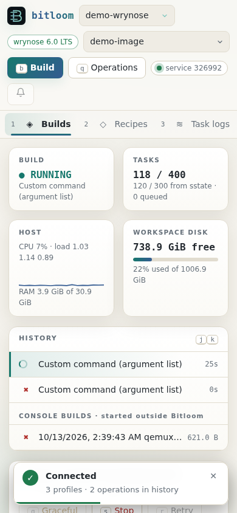
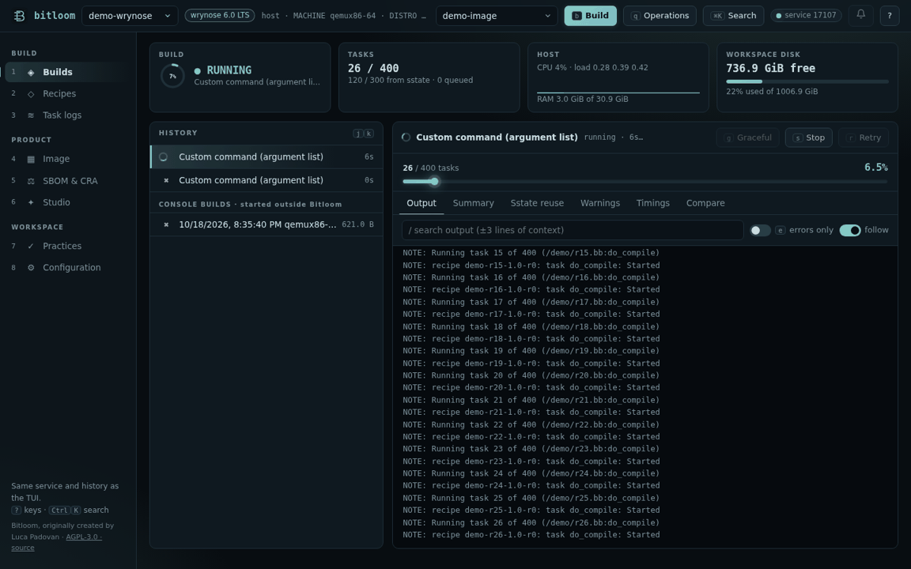

Web dashboard
bitloom --web serves a browser dashboard for the same build service the TUI uses. Builds queued from the browser and from the terminal share one serial queue and one history, so you can start a build in the TUI, follow it on a laptop or phone, and retry it from either place.
Screenshot Web dashboard following a running build

Start it#
bitloom --web # loopback only, opens a browser
bitloom --web --no-browser --port 9000 # pick the port; 0 chooses a free one
bitloom --web --config .bitloom/profiles.json --state .bitloom
The command prints a URL such as http://127.0.0.1:8765/#token=… and opens it in a graphical browser: on WSL the Windows browser (through wslview when installed, otherwise PowerShell). Text-mode browsers such as lynx or w3m are never started, because they would take over the terminal; without a graphical browser Bitloom only prints the URL. --no-browser skips opening. The token lives in the URL fragment: it is never sent in requests, the page keeps it for the browser tab and sends it as an X-Bitloom-Token header. Ctrl+C stops the web server only; builds keep running in the service. --state must match the TUI to see the same history.
The dashboard needs only the Python standard library. It is not a multi-user server: anyone holding the URL can queue builds for your profiles.
Remote access#
Keep the default loopback address and tunnel it:
ssh -L 8765:127.0.0.1:8765 build-server
--host 0.0.0.0 listens on every interface and prints a warning; use it only on a trusted network. On loopback the server also checks the Host header, which defeats DNS-rebinding attacks.
Sections#
| Key | Section | What it shows |
|---|---|---|
1 |
Builds | History with live spinners, the selected job with an animated progress bar (stripes while running, indeterminate until BitBake reports task counts), streaming output, search with context, errors-only filter, stop, graceful stop and retry. Console builds started outside Bitloom appear under the history. |
2 |
Recipes | Every layer on the left with its file count (example and selftest layers last); on the right the folders of the selected layer (recipes-core, classes-recipe…) open on click, with recipe name, version, kind and path. Filter by kind (Recipes, Images, Appends, Classes, kas) and search as you type; Use as target puts a recipe in the build field. |
3 |
Task logs | tmp/work/*/temp/log.* files with search and an errors-only view. Only indexed task logs can be read. |
4 |
SBOM & CRA | Release support, SBOM quality gauges, VEX status, vulnerabilities from cve-check, sbom-cve-check and Grype, CRA readiness checks, the regulation timeline and every SBOM option with its explanation. See SBOM, CRA and releases. |
5 |
Studio | Create a product layer, distribution, machine, image, recipe or append with a live preview. See Studio. |
6 |
Configuration | Projects (recent, new, clone), guided project setup, health checks, setup checks and literal local.conf values. See Projects. |
Screenshot Recipes grouped by layer and folder

Build target#
The target field in the top bar is a combobox. Click it, press t or ↓ to list the image recipes found in the project's layers: the kas target: and images already built come first, example and test images last, each with its layer and SUMMARY. Type to filter, ↑/↓ to choose, Enter to pick, Enter again to build. Any other recipe or several space-separated targets can still be typed.
An image recipe is a .bb that inherits core-image or image, or requires another image recipe. Only files with "image" in their path are read, so the list is ready in a few milliseconds.
Screenshot Target combobox listing the project's images

The build detail has Toaster-style tabs computed from the stored log: Summary (errors, warnings, failed tasks), Sstate reuse, grouped Warnings, observed task Timings and Compare with the previous run of the same command. A running build shows its ETA next to the task count.
Screenshot Build summary tab

Notifications and animations#
The bell button in the top bar turns on browser notifications for builds that end while the tab is in the background; the build service's own desktop and webhook notifications are configured in Configuration (see Daily helpers). New jobs slide in at the top of the history; existing rows update in place, so the list never flickers while a job runs. Toasts slide in for every state change of a job: started, succeeded, failed (with a button that opens the summary) and cancelled. Hover a toast to pause its countdown; failures stay longer. Cards count up, rings and meters animate, the CPU card draws a live sparkline, and views fade in. With the operating system's reduce motion setting, all animations are disabled.
Keyboard#
The dashboard works without a mouse.
| Key | Action |
|---|---|
1 – 6 |
Switch section |
Ctrl+K |
Command palette: sections, every operation, profile switching and recent builds |
/ |
Focus the search field of the section |
Esc |
Leave a field or close a dialog |
j / k, ↓ / ↑ |
Next / previous operation |
b / q / t |
Build the target / queue any operation / edit the target |
s / g / r |
Force stop / graceful stop / retry the selected operation |
e |
Errors only |
o u w m d |
Output, Summary, Warnings, Timings, Compare tab |
? |
Keyboard help |
Screenshot Command palette filtered for SBOM operations

The operation dialog lists every non-interactive operation grouped like the TUI command center, previews the exact command and refuses operations your Yocto release does not provide, naming the alternative.
Phone and narrow windows#
The layout collapses to one column, the navigation becomes a scrolling bar and toasts move to the bottom.
Screenshot Dashboard on a phone, light theme

API#
The page uses a small JSON API that scripts can use too (all calls need the X-Bitloom-Token header):
| Method and path | Purpose |
|---|---|
GET /api/state |
Profiles (with detected release), service status, history, host metrics |
GET /api/actions |
Operation catalogue with release windows |
POST /api/preview, POST /api/jobs |
Preview or queue {profile, action, values} |
GET /api/jobs/<id>/log?offset=N, ?q=…&errors=1 |
Incremental output or filtered search |
GET /api/jobs/<id>/report |
Summary, sstate, warnings, timings |
POST /api/jobs/<id>/stop, /retry |
`{mode: graceful |
GET /api/console, /api/console/log, /api/console/report |
Builds started outside Bitloom |
GET /api/compliance |
SBOM summaries, CRA checks, timeline, SBOM options |
GET /api/vulnerabilities, POST /api/vulnerabilities/scan |
Findings with filters; Grype scan of the newest SPDX SBOM |
GET /api/vulnerabilities/export?format=md |
The filtered findings as md, html, csv, json or sarif (attachment) |
GET /api/jobs/<id>/compare |
Comparison with the previous run of the same command |
GET/POST /api/notifications |
Build notification settings |
GET /api/workusage |
tmp/work usage per recipe |
/api/projects…, /api/setup… |
Projects and guided setup, see Projects |
GET /api/studio/fields, POST /api/studio/preview, /create |
Studio |
GET /api/metadata, /api/tasklogs, /api/tasklog, /api/health |
Read-only views |
Animation Animated tour of the web dashboard
